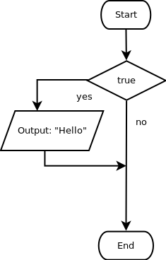

Jika Benar
Untuk dilakukan:
- Amati kode Javascript yang terbentuk. Bagaimana menggambarkan kondisi percabangan menggunakan Javacript?
- Susunlah blok program sehingga sesuai dengan flowchart di bawah ini, kemudian tekan tombol evaluate:

Berbeda dengan sebelumnya, kali ini output "Hello" akan dimunculkan, karena kondisi bernilai true.